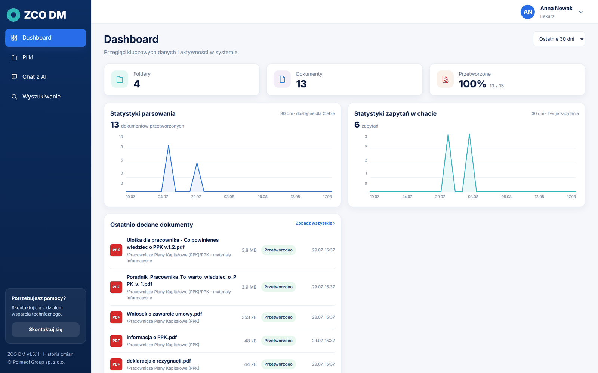
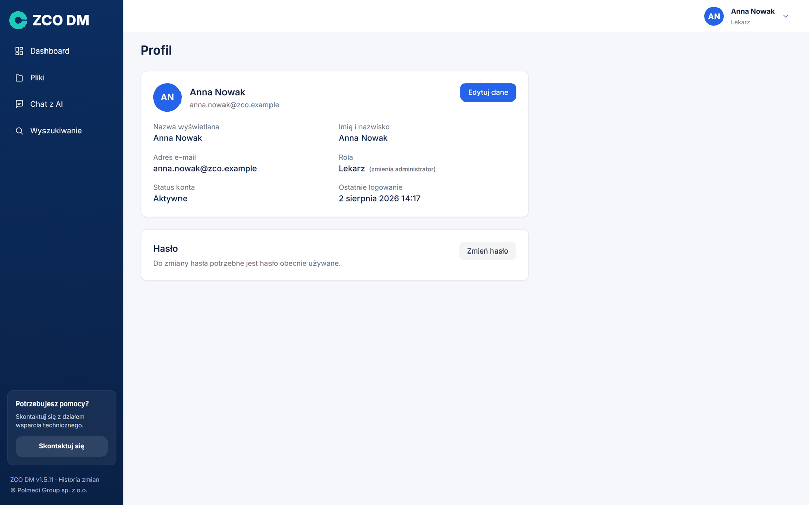
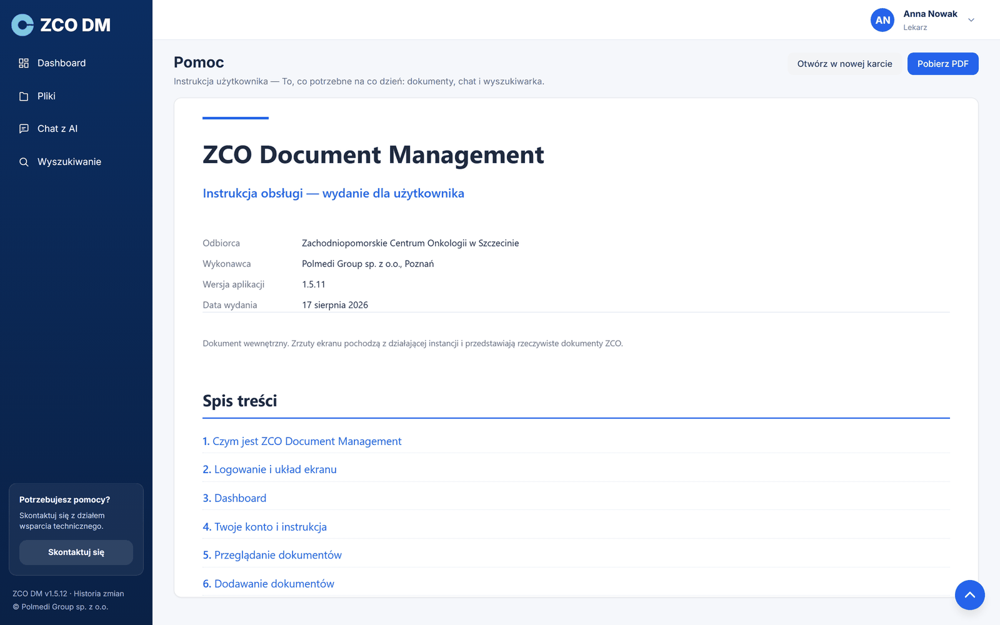
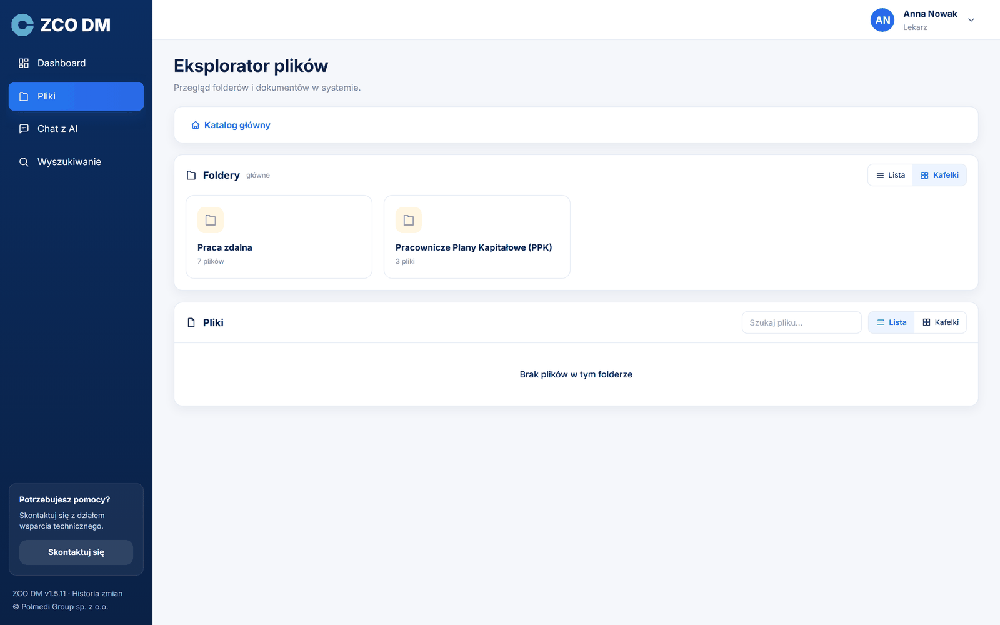
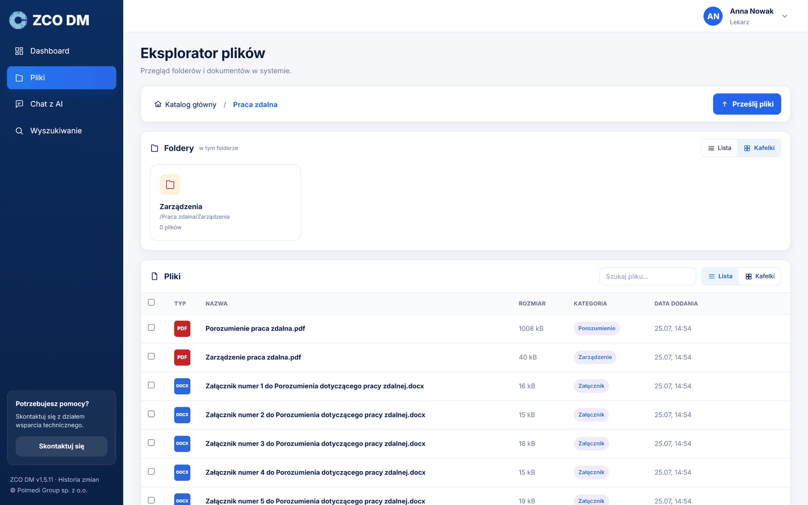
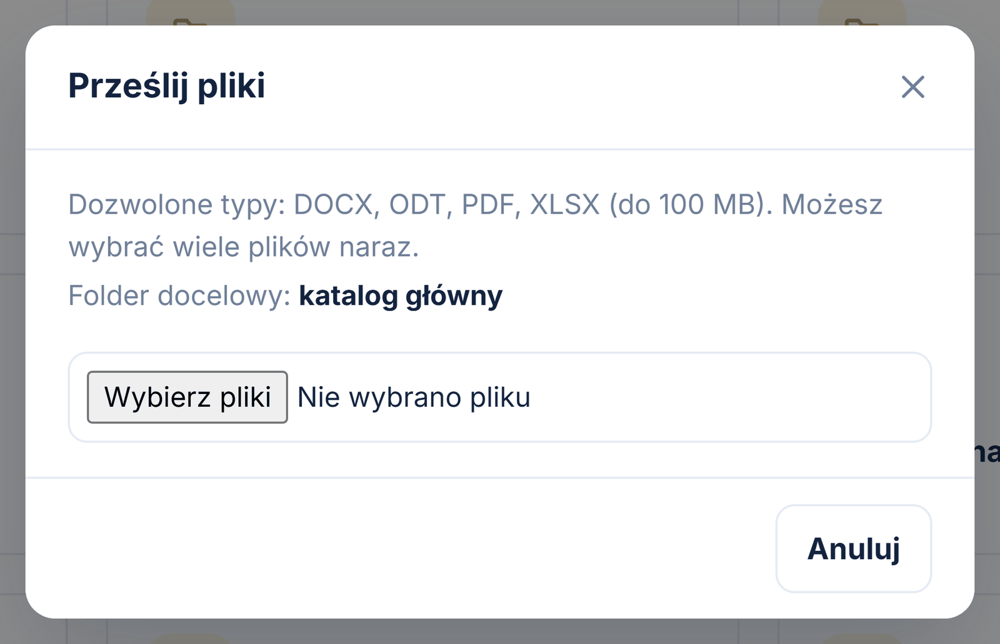
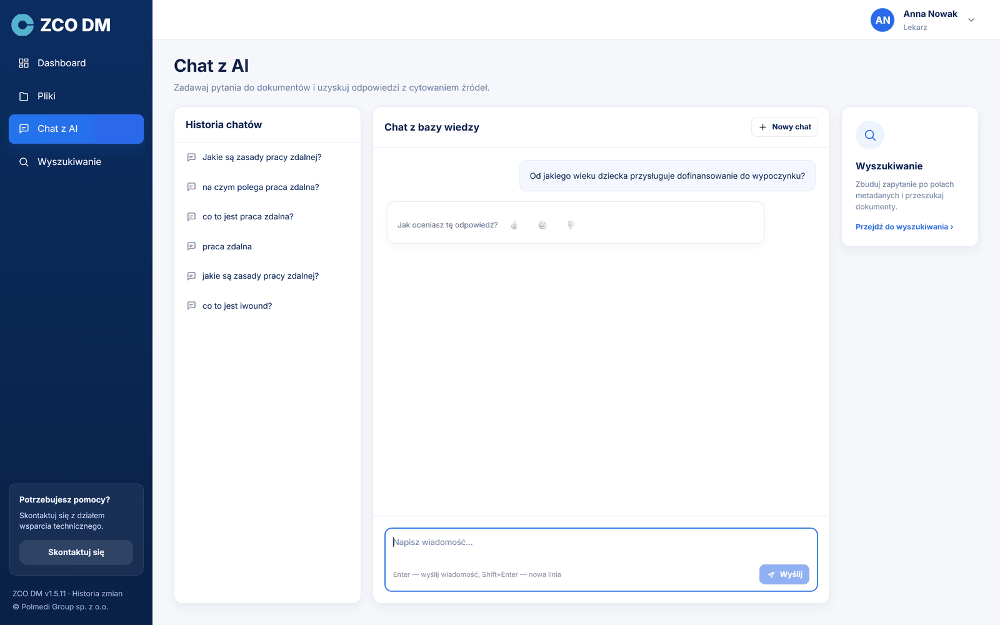
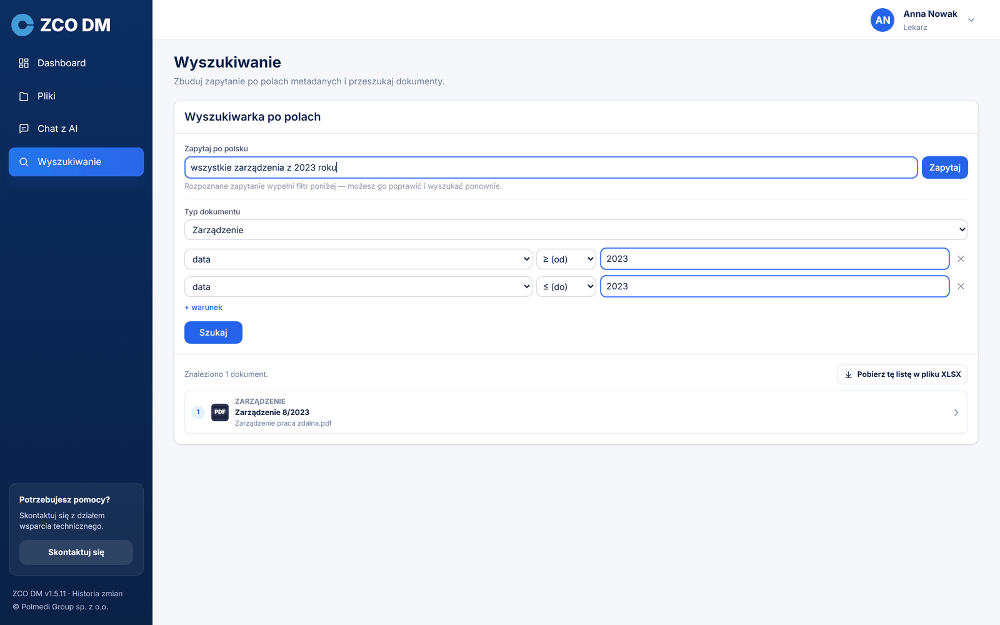
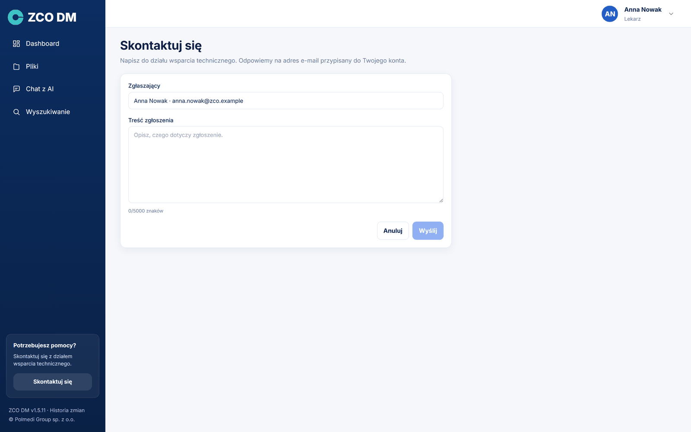

ZCO Document Management
- Pro
- Zachodniopomorskie Centrum Onkologii w Szczecinie
- Zpracoval
- Polmedi Group sp. z o.o., Poznań
- Verze aplikace
- 1.6.0
- Datum vydání
- 25. srpna 2026
Obsah
Co je ZCO Document Management
ZCO Document Management (zkráceně ZCO DM) je interní databáze dokumentů. Aplikace dělá dvě věci najednou: uchovává dokumenty v uspořádané struktuře složek a umožňuje ptát se na jejich obsah běžným jazykem, tak jak bychom se zeptali kolegy, který ty dokumenty zná.
Rozdíl oproti běžnému síťovému disku je zásadní. Na disku je třeba vědět, ve kterém souboru hledat. Zde stačí se zeptat „jaká jsou pravidla práce na dálku?“ a aplikace sama najde příslušné části dokumentů, sestaví z nich odpověď a ukáže, ze kterých dokumentů každá věta pochází.
Dvě cesty k dokumentu
Aplikace odpovídá na dva různé druhy otázek a má pro ně dvě samostatné obrazovky. Chat s AI odpovídá na otázky po obsahu — „od jakého věku dítěte náleží příspěvek?“. Vyhledávání odpovídá na otázky po struktuře — „ukaž všechna nařízení z roku 2023“. Rozdělení je záměrné: díky němu není třeba hádat, do kterého pole otázku napsat.
Co se s dokumentem děje po nahrání
Každý dokument prochází automatickým zpracováním. Aplikace přečte jeho obsah (i z tabulek), rozdělí jej na části, rozpozná druh dokumentu — nařízení, postup, žádost — a vytáhne z něj popisná pole, například číslo, datum nebo schvalující osobu. Teprve poté se dokument stane viditelným pro vyhledávání a pro chat.
Zpracování jednoho dokumentu trvá obvykle od několika desítek sekund do několika minut — podle jeho délky a podle toho, zda jde o textový soubor, nebo o sken vyžadující rozpoznání písma. Po tu dobu má dokument stav Ve frontě nebo Zpracování.
Bezpečnost dat
Celá aplikace i s jazykovým modelem běží na serveru, který patří Zachodniopomorskie Centrum Onkologii. Obsah dokumentů ani položené otázky tento server neopouštějí a nejsou odesílány do žádné vnější služby. Přístup k dokumentům vyplývá z oprávnění udělených roli, do níž účet patří — uživatel vidí pouze ty složky, které mu byly zpřístupněny.
Přihlášení a rozvržení obrazovky
Aplikaci otevíráme v internetovém prohlížeči na adrese, kterou uvedl správce. Nad formulářem je znak instance — ikona a název. Přihlašujeme se e-mailovou adresou a heslem obdrženým od správce; na velikosti písmen v adrese nezáleží.

Po přihlášení se obrazovka dělí na dvě části. Vlevo je tmavomodré menu, vpravo obsah zvolené stránky. V pravém horním rohu je vidět jméno a příjmení a kolečko s iniciálami, které rozbaluje uživatelské menu. Dole v bočním menu je číslo verze aplikace — je to odkaz na historii změn — a informace o výrobci.
Sbalení menu
Kliknutí na znak instance v horní části menu jej sbalí na pouhé ikony a nechá více místa na obsah. Další kliknutí menu opět rozbalí. Volba se pamatuje mezi relacemi, takže jednou sbalené menu zůstane sbalené i po dalším přihlášení.
Menu pod iniciálami
- Profil — vlastní údaje účtu a změna hesla.
- Návod k použití — tento dokument, otevřený přímo v aplikaci; lze jej také stáhnout jako PDF.
- Odhlásit se — ukončení práce.
Položky bočního menu
- Přehled — úvodní obrazovka s číselným souhrnem a grafy aktivity.
- Soubory — průzkumník složek a dokumentů.
- Chat s AI — otázky po obsahu dokumentů.
- Vyhledávání — vyhledávání podle popisných polí.
Vidí-li někdo jiný v menu další část pod čárou SPRÁVA, znamená to, že má správcovský účet. Běžný účet tuto část aplikace nevidí a nemá k ní přístup.
Dole v menu je ještě dlaždice Potřebujete pomoc? s tlačítkem Kontaktujte nás — vede k formuláři žádosti na technickou podporu (viz samostatná kapitola). Když se menu na nízké obrazovce nevejde, posouvá se jen seznam položek; dlaždice pomoci a zápatí zůstávají na svém místě.
Přehled
Přehled je úvodní obrazovka. Ukazuje stav databáze dokumentů v číslech a grafech a všechno na ní se týká zvoleného časového rozsahu — rozbalovacího seznamu v pravém horním rohu s možnostmi 7, 30 a 90 dní. Jedna volba platí pro celou obrazovku, takže dlaždice i grafy mluví vždy o témže období.

Dlaždice nahoře
Čtyři dlaždice udávají počet účtů, složek a dokumentů a podíl zpracovaných dokumentů. Pod číslem bývá druhý řádek s porovnáním s předchozím obdobím, například ↑ 12,6 % oproti předchozím 30 dnům.
Grafy
Dva grafy ukazují denní aktivitu: počet zpracovaných dokumentů a počet otázek položených chatu. Najetí kurzorem ukáže přesnou hodnotu z daného dne.
Čísla v Přehledu se týkají toho, co smíme vidět. Dokumenty a složky se počítají v rozsahu udělených oprávnění a graf otázek ukazuje pouze otázky položené z vlastního účtu. Dva lidé s různými oprávněními tedy na této obrazovce uvidí různá čísla a je to správné chování.
↑ ObsahVáš účet a návod
Kolečko s iniciálami v pravém horním rohu rozbaluje menu se třemi položkami: Profil, Návod k použití a Odhlásit se. Menu se zavírá klávesou Escape nebo kliknutím vedle.
Stránka Profil
Stránka Profil ukazuje údaje účtu: zobrazované jméno, jméno a příjmení, e-mailovou adresu, přiřazenou roli, stav účtu a datum posledního přihlášení.

Tlačítko Upravit údaje promění první tři položky v pole formuláře. Ukládáme tlačítkem Uložit, ustupujeme tlačítkem Zrušit.
- Zobrazované jméno — objevuje se v pozdravu, v iniciálách a ve správcovských přehledech. Neslouží k přihlášení, takže je lze libovolně měnit.
- Jméno a příjmení — plná podoba, používaná na stránce Profil a v menu.
- E-mailová adresa — touto adresou se přihlašujeme do aplikace. Po její změně probíhá další přihlášení už novou adresou.
Změna hesla
Heslo měníme na samostatné kartě Heslo tlačítkem Změnit heslo. Formulář žádá o právě používané heslo a o dvojí zadání nového. Nové heslo musí mít nejméně osm znaků a lišit se od dosavadního.
Po úspěšné změně aplikace odhlásí a ukáže přihlašovací obrazovku — je to záměr: hned si ověříme, že nové heslo funguje.
Pomoc
Položka Návod k použití otevírá stránku Pomoc s tímto dokumentem přímo v aplikaci, bez hledání souboru na disku. Nahoře na stránce jsou dvě tlačítka: Otevřít v nové kartě a Stáhnout PDF. Správce vidí plné vydání, ostatní účty vydání pro uživatele, které popisuje pouze obrazovky, k nimž mají přístup.

Prohlížení dokumentů
Obrazovka Soubory je průzkumník dokumentů. Nahoře je cesta navigace začínající Kořenovou složkou — kliknutí na kterýkoli její prvek vrátí na tuto úroveň. Níže jsou dvě karty: Složky a Soubory.

Dva pohledy
Složky i soubory lze prohlížet jako seznam nebo jako dlaždice — přepínač je v záhlaví každé z karet a volba je nezávislá pro složky a pro soubory. Seznam pojme na jeden pohled více informací, dlaždice jsou pohodlnější, když hledáme dokument „z vizuální paměti“.

Sloupce seznamu
Seznam souborů ukazuje typ souboru, název, velikost, kategorii rozpoznanou aplikací a datum přidání. Kategorie je druh dokumentu — nařízení, postup, žádost — a právě ona nejčastěji pomáhá najít správný soubor. Dokumenty, které aplikace nepřiřadila k žádné kategorii, mají v tomto sloupci nápis neznámá.
Hledání a stránkování
Pole Hledej soubor nad seznamem filtruje dokumenty podle názvu v rámci aktuální složky. Pod seznamem je počet dokumentů a volba, kolik položek zobrazovat na stránce (10, 25, 50 nebo 100).
Podrobnosti dokumentu
Kliknutí na řádek otevře okno s podrobnostmi: typ souboru, velikost, stav zpracování, datum přidání, složku, účet, který dokument nahrál, a rozpoznanou kategorii. Z tohoto okna lze dokument stáhnout a soubory PDF také zobrazit v nové kartě.
V kořenové složce běžný účet nevidí žádné soubory — dokumenty ležící mimo složky jsou dostupné pouze správci. Vidět jsou naopak složky, které byly zpřístupněny naší roli.
↑ ObsahPřidávání dokumentů
Dokumenty přidáváme tlačítkem Nahrát soubory v pravém horním rohu stránky Soubory. Míří do složky, která je právě otevřená — proto nejprve vejdeme do správné složky a teprve potom nahráváme. Cílová složka je vždy vypsaná v okně odesílání.

Lze označit více souborů najednou. Aplikace pak ukazuje postup zvlášť pro každý z nich a na konci souhrn: kolik souborů se nahrálo a kolik skončilo chybou.
Povolené formáty
Aplikace přijímá soubory PDF, DOCX, ODT a XLSX, každý o velikosti do 100 MB. Seznam formátů je vidět v okně odesílání a pochází přímo z nastavení aplikace — pokud jej správce změní, okno ukáže nový seznam a systémové okno výběru souboru odfiltruje ostatní přípony.
Tlačítko Nahrát soubory se objevuje jen ve složkách, k nimž máme právo zápisu. Ve složkách zpřístupněných pouze ke čtení vidíme dokumenty a můžeme je stahovat, ale nemůžeme nic přidat ani smazat.
↑ ObsahChat s AI — otázky po obsahu dokumentů
Obrazovka Chat s AI je místo, kde klademe otázky po obsahu dokumentů. Dělí se na tři části: seznam dřívějších konverzací vlevo, okno konverzace uprostřed a odkaz na vyhledávání vpravo.
Otázku píšeme do pole dole a potvrzujeme klávesou Enter; Shift+Enter přejde na nový řádek. Odpověď se objevuje postupně, slovo po slově — lze ji přerušit tlačítkem Zastavit.

Odkud odpověď pochází
Pod každou odpovědí je seznam dokumentů použitých v odpovědi. Každá položka udává číslo odkazu, typ souboru, kategorii dokumentu, stranu a název souboru; kliknutí otevře zdrojový dokument. Čísla v plaketách odpovídají odkazům v textu odpovědi, takže je vidět, která věta odkud pochází.
Níže bývá ještě informace typu Zkontrolovali jsme také 7 dokumentů, které nebyly využity spolu s tlačítkem rozbalujícím jejich seznam. Jsou to dokumenty, které aplikace při hledání odpovědi prošla, ale nic k tématu v nich nenašla — vyplatí se tam nahlédnout, když se odpověď zdá neúplná.
Když v dokumentech odpověď není
Aplikace odpovídá výhradně na základě nahraných dokumentů. Pokud informaci nenajde, napíše to přímo, místo aby si vymýšlela. Odpověď „v dokumentech se nepodařilo najít informace na toto téma“ je tedy informací o souboru dokumentů, nikoli závadou.
Otázky na seznam dokumentů
Otázku typu „ukaž všechna nařízení z roku 2023“ aplikace rozpozná jako žádost o výpis, nikoli o odpověď z obsahu. Odpoví pak větou „Našel jsem N dokumentů“, seznamem těchto dokumentů a tlačítkem Stáhnout tento seznam do souboru XLSX.
Konverzace
Každá konverzace se ukládá do seznamu vlevo a lze se k ní vrátit. Tlačítko Nový chat začne konverzaci načisto. Má to význam: v rámci jedné konverzace bere aplikace v úvahu dřívější otázky, takže při změně tématu je lepší začít novou.
Vyhledávání podle popisných polí
Vyhledávání je samostatná obrazovka v menu. Odpovídá na otázky po struktuře souboru: „všechna nařízení z roku 2023“, „žádosti podepsané konkrétní osobou“. Chat odpovídá na otázky po obsahu — tyto dvě cesty se záměrně nemíchají.
Zeptejte se běžným jazykem
Nejjednodušší je napsat otázku běžným jazykem do pole nahoře. Kurzor v něm stojí hned po vstupu na obrazovku. Aplikace z otázky rozpozná druh dokumentu a podmínky, vyplní jimi formulář níže a hned ukáže výsledky. Rozpoznaný filtr lze potom ručně opravit a vyhledat znovu.

Formulář
Formulář se skládá z druhu dokumentu a libovolného počtu podmínek. Podmínka je popisné pole, operátor (obsahuje, rovná se, od, do, po, před) a hodnota. Seznam dostupných polí závisí na zvoleném druhu dokumentu — pochází přímo ze schémat dokumentů.
Výsledky
Výsledky vypadají stejně jako seznam dokumentů pod odpovědí chatu: číslo, typ souboru, kategorie, název dokumentu a název souboru. Kliknutí otevře dokument. Nad seznamem je tlačítko Stáhnout tento seznam do souboru XLSX — sešit obsahuje úplnou sadu popisných polí, se sloupci v pořadí stanoveném ve schématu dokumentu.
Žádost na technickou podporu
Dlaždice Potřebujete pomoc? dole v bočním menu vede k formuláři žádosti na technickou podporu. Stačí popsat věc a odeslat — odesílatel a instance se připojují automaticky a odpověď zamíří na e-mailovou adresu přiřazenou k účtu.

Žádost jde poštou, nikoli mechanismem zpracování dokumentů. Je to záměr: výpadek zpracování nesmí odříznout cestu k nahlášení problému, protože právě tehdy jsou hlášení nejpotřebnější.
Dobrá praxe
- Dávat dokumentům názvy, které říkají, čím jsou — usnadňuje to rozpoznání druhu i pozdější hledání.
- Nahrávat dokumenty do tematické složky, nikoli do kořenové složky.
- Kontrolovat stav po nahrání: teprve Zpracováno znamená, že dokument odpovídá na otázky.
- Při změně tématu začínat nový chat, aby dřívější otázky neovlivňovaly odpověď.
- Při formálních záležitostech otevírat zdrojový dokument uvedený pod odpovědí.
Nejčastější dotazy
Níže nejčastější situace hlášené při prvním kontaktu s aplikací.
| Situace | Co dělat |
|---|---|
| Nahrál jsem dokument, ale chat ho nezná. | Zkontrolovat stav v seznamu souborů. Dokud není Zpracováno, dokument se vyhledávání neúčastní. U dlouhých dokumentů trvá zpracování několik minut. |
| Chat odpovídá, že nenašel informace. | Nejčastěji se otázka týká dokumentu, který v databázi není, nebo dokument ještě není zpracovaný. Vyplatí se také položit otázku jinak — celou větou. |
| Nevidím složku, o níž mluví kolega. | Složky se zpřístupňují rolím. Chybí-li přístup, je třeba požádat správce o udělení oprávnění k této složce. |
| Aplikace mě sama odhlásila. | Po době nečinnosti stanovené správcem relace vyprší. Stačí se přihlásit znovu. |
| Nemohu nahrát soubor — okno výběru jej neukazuje. | Aplikace přijímá formáty PDF, DOCX, ODT a XLSX. Soubory v jiných formátech je třeba nejprve uložit v některém z nich. |
| Nemohu se přihlásit uživatelským jménem. | K přihlášení slouží výhradně e-mailová adresa přiřazená k účtu. Uživatelské jméno je pouze jménem zobrazovaným. |
| Zapomněl jsem heslo. | Nové heslo nastavuje správce v modulu Uživatelé. Po přihlášení se vyplatí změnit je na vlastní na stránce Profil. |
| Kde najdu tento návod v aplikaci? | Pod kolečkem s iniciálami v pravém horním rohu, položka Pomoc. Odtud jej lze také stáhnout jako PDF. |
Slovníček
| Pojem | Význam |
|---|---|
| Chat s AI | Obrazovka, na které klademe otázky po obsahu dokumentů. |
| Vyhledávání | Obrazovka, na které filtrujeme dokumenty podle popisných polí. |
| Chat | Konverzace s aplikací vedená běžným jazykem. |
| Část (chunk) | Kousek dokumentu — jednotka, na kterou aplikace dělí obsah, aby mohla přesně ukázat zdroj odpovědi. |
| Parsování | Přečtení obsahu dokumentu a jeho příprava pro vyhledávání. |
| Popisné pole | Informace popisující dokument — číslo, datum, schvalující osoba. |
| Druh dokumentu | Kategorie rozpoznaná automaticky: nařízení, postup, žádost a další. |
| Role | Skupina oprávnění přiřazená účtu — složky se zpřístupňují rolím, nikoli osobám. |
| Zdroj | Dokument a strana, z nichž pochází daná část odpovědi. |